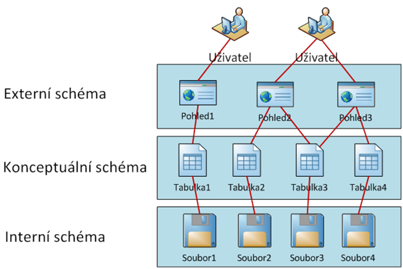
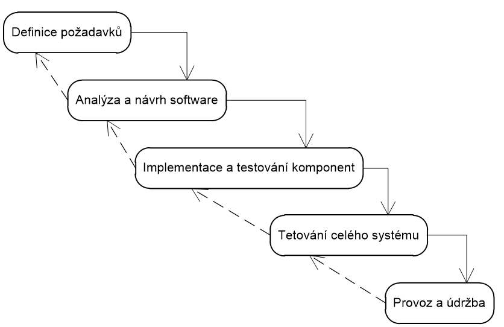
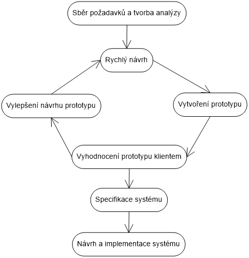
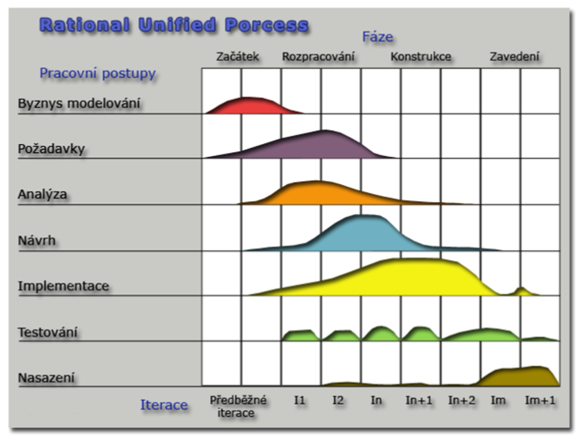

Hromadné zpracování dat – automatizovaný systém, který nám umožní zpracování velkého množství dat a údajů.
Hromadné zpracování dat nám umožňuje:
- údržba dat,
- vhodně zaznamenávat,
- umožní změnu a smazání,
- umožní nám vyhledávat,
- třízení podle různých kritérií,
- odvozování dalších údajů,
- zaznamenávání vztahů mezi objekty,
- vhodná grafická reprezentace údajů.
Problémy při hromadném zpracování dat:
- Redundance: Opakování, opakování, opakování..,
- nekonzistence: Chyba v databázi, data nejsou správně,
- špatná integrita: Data v datbázi neodpovídají outputu,
- obtížná dosažitelnost dat: Název je zároveň definicí,
- izolovanost: Data nemusí být provázána s ostatními,
- neparalelní přístup uživatelů: K datům se nemusí dostat více uživatelů naráz,
- zabezpečení dat: K datům se nesmí dostat neautorizovaní lidé.
SŘBD - systém řízení báze dat - database management system
- Externí schéma - dělí se na pohledy, ve kterých jsou tabulky
- Konceptuální schéma - skládá se z tabulek, ve kterých jsou data
- Interní schéma - Jsou tam data + důležité low level data (ne kapitán Data ze Star Treku, haha, jsem vtipný)
Jsou dva druhy životních cyklů:
Tradiční - Méně flexibilní, stanovený plánovaný postup
Agilní - Více flexibilní, spíše adaptilní postup
Struktura všech životních cyklů je následující:
Požadavky --> Analýza a návrh systému --> Implementace --> Testování --> Provoz + údržba
- Model je založený na fázích, které přecházejí pouze, je-li předchozí dokončená
Výhody:
- Jasně rozdělené fáze, které, pokud se dodrží, umožňují efektivní vývoj
- Možnost dobrého rozdělení činností mezi lidi
Nevýhody:
- Při špatné komunikaci s klientem může být vývoj neefektivní
- Problémové hledání chyb
- Fáze se mohou špatně dodržovat
Výhody:
- Rychlý vývoj - vysoká šance na povedení
- Není nutnost vytvářet dokumentaci
Nevýhody:
- Není kvalitní dokumentace
- Vhodný pouze pro menší týmy
- Špatné sledování jednotlivých částí vývoje
- Metoda je založená na komunikaci s klientem
- Funguje tak, že se vytvoří rychlý návrh programu, který je vyhodnocen klientem. Pokud se mu to nelíbí, tak se vytvoří nový návrh
Výhody:
- Dobrá komunikace s klientem
- Rychlé programování, je-li hodnocení klienta dobré
-
Unified Process a Rational Unified Process
- Metody fungují postupným navazováním jednotlivých částí vývoje na sobě
- Od vodopádu se liší tím, že fáze na sebe navazují mnohem plynuleji
- V zásadě jsou to stejné modely, pouze RUP je vyvinutý IBM.
Výhody:
-
Nevýhody:
- Nejsou vhodné pro malé projekty